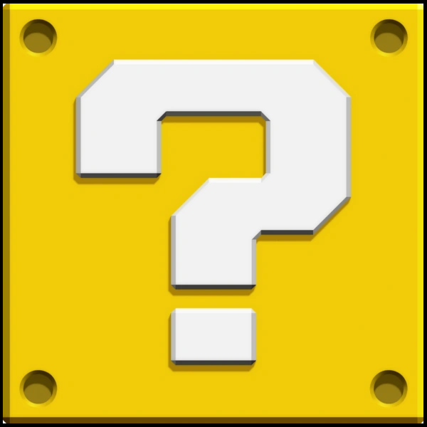
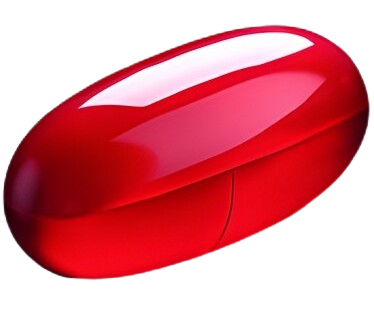
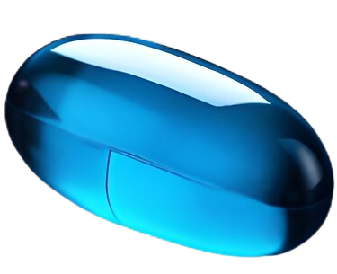

Technology Searching
Qu'est-ce qu'une veille technologique


Méthode Pull
Consiste en une recherche active et manuelle d'informations. Gain de précision et de pertinence mais chronophage et risque de louper des informations.

Méthode Push
Consiste à recevoir automatiquement des informations via des outils numériques. Gain de temps à moindre effort mais nécessite la fiabilité des outils et des critères de recherche.
Mon thème : Green AI
L'utilisation de l'IA pour optimiser la planification, la production et l'utilisation des énergies. Plus d'infos